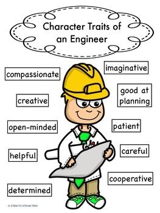

What Traits Are Good For Civil Engineers?
Important traits for a civil engineer to have include creativity, critical thinking, technical competence, project management, leadership, communication, and reputation. These are traits that are valued in any career, but their importance is amplified for civil engineers. If you are aware of the Myers-Briggs Types, ISTJs are perfect for a career in civil engineering. The practical nature of civil engineering requires attention to detail and strict adherence to standards and regulations.
Do any of these traits apply to you? If yes, you might be perfect for civil engineering.
